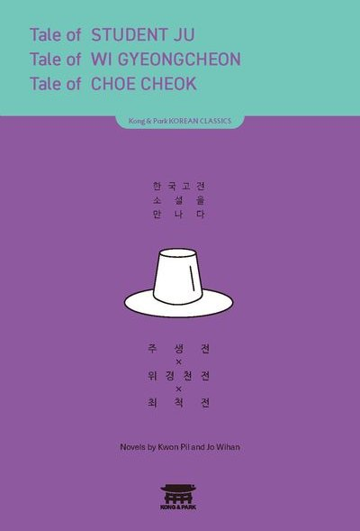
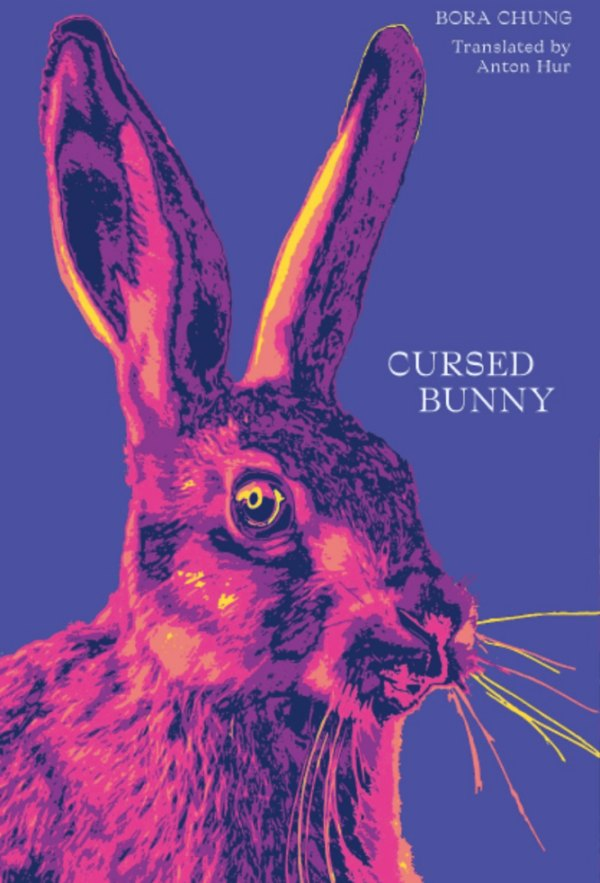
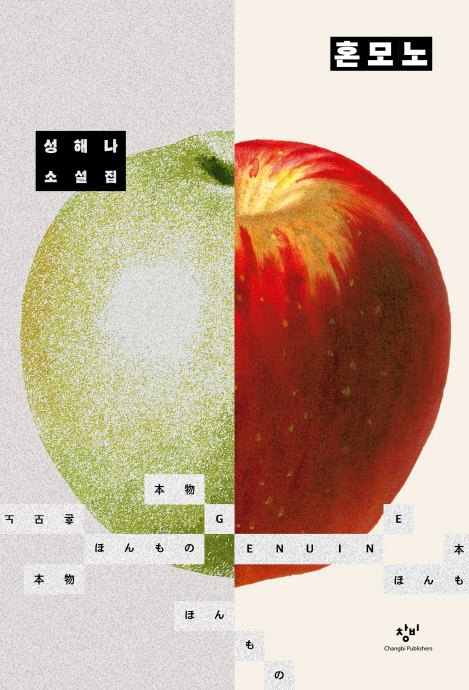
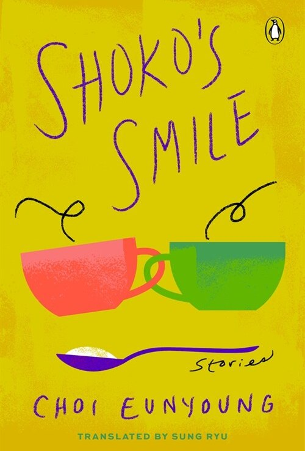
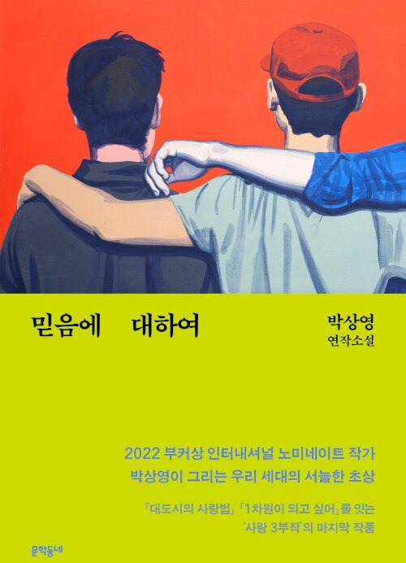
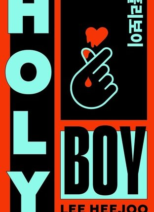
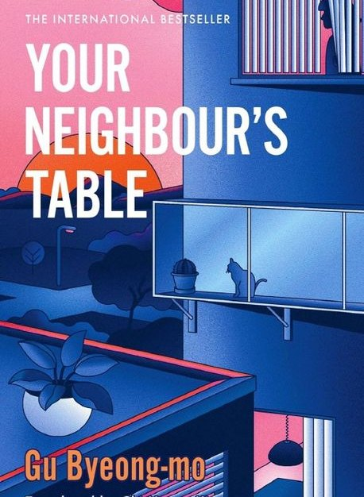
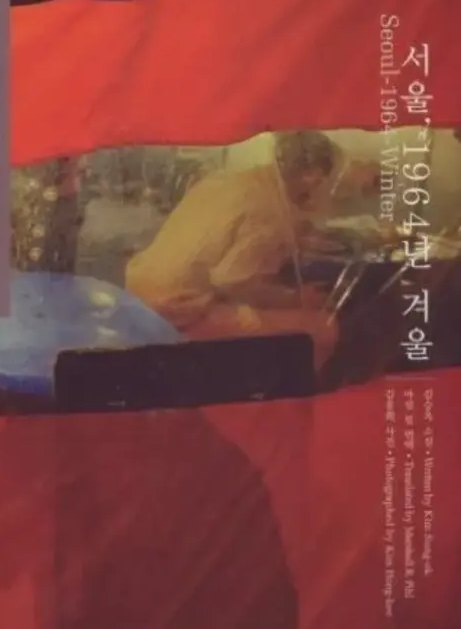

Korean Literature Book Club
Korean fiction in English translation, read every two weeks with Korean and international students at Sungkyunkwan University since Fall 2025.
About
Launched in Fall 2025, the Korean Literature Book Club brings together Korean and international students from diverse backgrounds to explore Korean fiction in English translation. The club meets every two weeks to read and freely discuss Korean novels and short stories in a friendly and open atmosphere. Through these conversations, members share different perspectives on Korean society, culture, and storytelling. Students from Japan, Germany, Austria, Italy, and Peru have participated in the club, and everyone interested in Korean literature is welcome to join.
Who can join
Anyone interested in Korean literature is welcome. The club is open to both Korean and international students, including exchange and non-exchange students. No Korean-language proficiency is required, as we read Korean fiction in English translation. To join, email me at pinktokki@skku.edu.
Members
Current members
Students from Ruhr University Bochum, the University of Tübingen, the National University of San Marcos (UNMSM), and four undergraduate students majoring in Korean Language and Literature at Sungkyunkwan University.
Former members
Since Fall 2025, exchange students from Austria, Germany, Japan, and Italy have also participated in the club.
What we've read

최척전Jo Wi-han (조위한)

저주토끼Bora Chung (정보라)

혼모노Sung Hae-na (성해나)

쇼코의 미소Choi Eunyoung (최은영)

믿음에 대하여Park Sang-young (박상영)

성소년Lee Hee-joo (이희주)

네 이웃의 식탁Gu Byeong-mo (구병모)

서울 1964년 겨울Kim Seung-ok (김승옥)